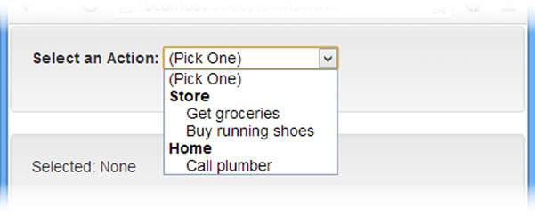

La variable poderosa
Una variable puede ser un valor, funcion, objeto, whatever
Los misterios de undefined
Cualquier valor que no exista se convierte en undefined
Dinamismo everywhere
Cualquier objeto es dinamico, esto es, pueden agregarse nuevas propiedades (atributos y/o metodos) sin que esten definidos previamente
//Creamos una variable que guarde nuestra funcion
var soyUnaFuncion = function() {
console.log('Js Rulez!');
};
//La llamamos
soyUnaFuncion();
//Puede recibir parametros
var soyUnaFuncionConParametros = function(nombre, apellido) {
console.log('Hola' + nombre + ", " + apellido);
};
soyUnaFuncionConParametros("Dario", "Diaz");
//Creamos una variable que guarde nuestra funcion constructora
var soyUnConstructor = function(nombre, apellido, miEdad) {
this.nombre = nombre;
this.apellido = apellido;
this.edad = miEdad;
this.mostrarDatos = function(variableInterna) {
return this.nombre + " - " + this.apellido + " - " + variableInterna;
};
};
//Creamos un objeto
var objeto = new soyUnConstructor("Dario", "Diaz", 23);
//Lo usamos como cualquier objeto
console.log(objeto.nombre);
console.log(objeto.mostrarDatos());
//Creamos una function con 3 parametros
var miFuncion = function(param1, param2, param3) {
console.log('Parametro 1: ', param1);
console.log('Parametro 2: ', param2);
console.log('Parametro 3: ', param3);
};
//La llamamos con un parametro de menos
miFuncion("Hola", "Mundo");
//Creamos un objeto por cualquier forma
var miConstructor = function(param1, param2) {
this.nombre = param1;
this.apellido = param2;
};
//Creamos un objeto
var miObj = {};
var miObj2 = new Object();
var objeto = new miConstructor("Dario", "Diaz");
objeto.otraPropiedad = 3;
miObj.valorBooleano = true;
miObj2.metodo = function(parametro) {
console.log("Funcion de miObj2:" , parametro + 1);
};
Es una forma de describir objetos en JS
Un JSON puede solo tener atributos (ya sean valores, otros objetos, arrays, etc)
La caracteristica fundamental de un JSON es que se puede escribir (materializar) y leer (desmaterializar) como un String
{
"propiedad": "valor",
"otraPropiedad": 3
}
{
"propiedad": "valor",
"otraPropiedad": 3,
"array": ["elemento1", "elemento2"],
"objeto": { "idem": true, "idem2": 345 }
}
JS nos provee 2 funciones para transformar String en JSON o convertir nuestros objetos en JSON
JSON.parse(string): trata de transformar un string en objeto JSON, si falla lanza excepcion
JSON.stringify(objeto): transforma un objeto en un String JSON
var respuestaDelServer = '{
"propiedad": "valor",
"otraPropiedad": 3
}';
var objParseado = JSON.parse(respuestaDelServer);
console.log(objParseado);
//Creamos un objeto normal
var obj = {};
obj.nombre = "Dario";
obj["apellido"] = "Diaz";
var parseo = JSON.stringify(obj);
console.log(parseo);
Scope: ambito o contexto donde co-existen variables y metodos
Closure Scope: expresiones (normalmente funciones o metodos) que pueden acceder a otros ambitos
$scope.todos = [ {accion:'Caminar'}, {accion:'Correr'}]
Hay {{todos.length}} elementos.
Hay elementos.
$scope.contenidoHTML = 'Link';
Previene que AngularsJS vincule alguna expression
AngularJS usa {{ y }} caracteres como plantilla.
To Do List
El primer item es: {{todos[0].accion}}
src, onload, autoscroll
$index, $first, $middle, $last, $even, $odd
#
Acción
Listo
{{$index + 1}}
{{item.accion}}
{{item.completo}}
{{subMenu.titulo}}
#
Action
Done
{{$index + 1}}
{{prop}}
-
{{item.action}} (Done)
Select another option to display a layout
#
Action
Done
{{$index + 1}}
{{item.action}}
{{item.complete}}
#
Action
Done
{{$index + 1}}
{{item.action}}
{{item.complete}}
#
Action
Done
{{$index + 1}}
{{item.action}}
(Incomplete)
(Done)
(Incomplete)
(Done)
AngularJS aplica las directivas para formularios automaticamente cuando encuentra elementos del tipo form, input, select, y textarea.
Para utilizar las validaciones hace falta utilizar el elemento FORM, el atributo NOVALIDATE es utilizado para que los navegadores con HTML5 no realize validaciones y deje todo en manos de AngularJS
$pristine true si el usuario no interactuó con el elemento/formulario
$dirty true si el usuario interactuó con el elemento/formulario
$valid true si el contenido del elemento/formulario es válido
$invalid true si el contenido del elemento/formulario es inválido
$error provee de información del error producido.
Valid: {{myForm.$valid}}
ng-pristine los elementos con los que no interactuó el usuario son añadidos a esta clase
ng-dirty los elementos con los que interactuó el usuario son añadidos a esta clase
ng-valid los elementos que son válidos son añadidos a esta clase
ng-invalid los elementos que no son válidos son añadidos a esta clase
Message: {{message}}
Valid:
{{myForm.$valid}}
Se puede definir que valor vincular al modelo de la siguiente manera
se utiliza para agrupar items basados en algun atributo
Selected: {{selectValue || 'None'}}

Hay 3 maneras informar que componente inyectar
function MyController($scope, greeter) {
// ...
}
var MyController = function(renamed$scope, renamedGreeter) {
...
}
MyController['$inject'] = ['$scope', 'greeter'];
Maneras informar que componente inyectar
someModule.factory('greeter', ['$window', function(renamed$window) {
// ...
}]);
angular.module('myModule', [])
.factory('serviceId', ['depService', function(depService) {
...
}])
.directive('directiveName', ['depService', function(depService) {
...
}])
.filter('filterName', ['depService', function(depService) {
...
}]);
angular.module('myModule', [])
.config(['depProvider', function(depProvider){
...
}])
.run(['depService', function(depService) {
...
}]);
someModule.controller('MyController', ['$scope', 'dep1', 'dep2', function($scope, dep1,
dep2) {
...
$scope.aMethod = function() {
...
}
...
}]);
Provee una manera diferente de trabajar que ngRoute de AngularJS
Con los estados las vistas no estan acopladas a una URL y permite cambiar de vistas internamente sin la necesidad de cambiar la URL
$stateProvider es el encargado de proveer de los estados en la aplicación y es configurado dentro del .config() del módulo
// in app-states.js (or whatever you want to name it)
$stateProvider.state('contacts', {
template: 'My Contacts
'
})
Cuando se activa un estado, la plantilla se inserta en el ui-view de su padre, si no lo tiene entonces se inserta en el index
El controlador no se cargará hasta que no se hayan resuelto todas las dependencias
$stateProvider.state('myState', {
controller: function(){},
resolve:{
objetoSimple:function(){
return {value:'asd'};
},
//Retorna un promise, es lo mas utilizado
promiseObj: function($http){
return $http({method: 'GET', url: '/someUrl'});
}
}
}
$stateProvider
.state(contacts)
.state('contacts.list', {
templateUrl: 'contacts.list.html',
data: {
customData1: 44,
customData2: "red"
}
})
Son disparados desde $rootScope
$stateProvider
.state('contacts', {})
.state('contacts.list', {});
También se puede utilizar la propiedad 'parent' para anidar
Los hijos heredan las dependencias resueltas por su padre y los datos que hayan pasado, además si las vistas están anidadas los $scope se heredarán
$stateProvider
.state('contacts', {
abstract: true,
url: '/contacts',
// Note: abstract still needs a ui-view for its children to populate.
// You can simply add it inline here.
template: '
$stateProvider
.state('report',{
views: {
'filters': {
templateUrl: 'report-filters.html',
controller: function($scope){ ... controller stuff just for filters view ... }
},
'tabledata': {
templateUrl: 'report-table.html',
controller: function($scope){ ... controller stuff just for tabledata view ... }
},
'graph': {
templateUrl: 'report-graph.html',
controller: function($scope){ ... controller stuff just for graph view ... }
},
}
})
Se recupera el valor pasado por medio de $stateParams
$stateProvider.state('contacts.detail', {
url: '/contacts/:contactId',
controller: function($stateParams){
$stateParams.contactId
}
})
$stateProvider
.state('contacts', {
url: '/contacts',
...
})
.state('contacts.list', {
url: '^/list',
...
});